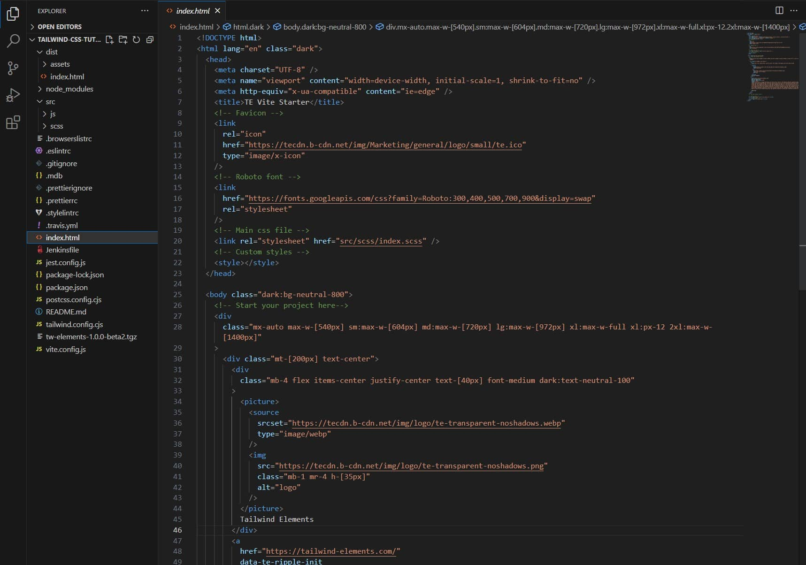

Let's have a closer look at how a Tailwind CSS project is set up, what the file structure is, and what exactly the basic code does
Note: If you stopped the process in your terminal, you need to start it again.
Type npm start command and press enter. MDB GO can start the
local server again. After that, it should open a new browser window with
the live preview of your project.
When you open our project in your code editor, you will see a large number of files. I know it may seem intimidating at first, but it is actually quite simple and in this lesson we will explain it all.
index.html
index.html is the file where we will spend the most time. Let's
take a look at the code inside.
First, let's examine <head> section. In the snippet below
I've added comments explaining what each of the lines does.
Below the <head> section you will find
<body> section:
In the main project folder you will find the src folder with
two subfolders: js and scss.
In the file /src/js/index.js you will find only one line that
imports the TW Elements library. However, when we start building our
project, we will import and initialize individual components here.
In the file /src/scss/index.scss you will find necessary
Tailwind directives, which simply means that they load individual Tailwind
CSS functionalities into our project. Later we will use this file to
customize Tailwind CSS and use its more advanced features.
In the main project folder you will find the dist folder with
an assets subfolder and index.html file. These are
the so-called dist files.
Dist files, short for distribution files, are files that are created as the output of a build process or compilation of source code.
Dist files typically contain a production-ready version of the software or application, optimized for performance and ready for deployment. These files are commonly used in web development, where a source code repository containing raw HTML, CSS, and JavaScript files is built into a distribution format that can be served to end-users through a web server. The contents of a dist file may include minified and concatenated CSS and JavaScript files, compressed images, and HTML templates that have been preprocessed or compiled.
To put it simply - during development locally on our computer we load a lot of unnecessary code, because it makes our work easier.
However, when our project is ready to be published on the Internet, we want it to be as light, optimized and as fast as possible.
Dist files contain minified and optimized code, which is NOT human readable (because it doesn't have to be - only source files should be readable), but it is adapted for public use by our users.
You should not change anything in the dist files, as they are created automatically after compiling the source files.
To sum up - we will work on source files, and we will leave the job of generating and publishing optimized dist files to Vite and MDB GO.
There are many other files in our project, but knowing exactly what they do and how they work is not needed in the context of this tutorial. From now let's focus on learning Tailwind CSS 🚀